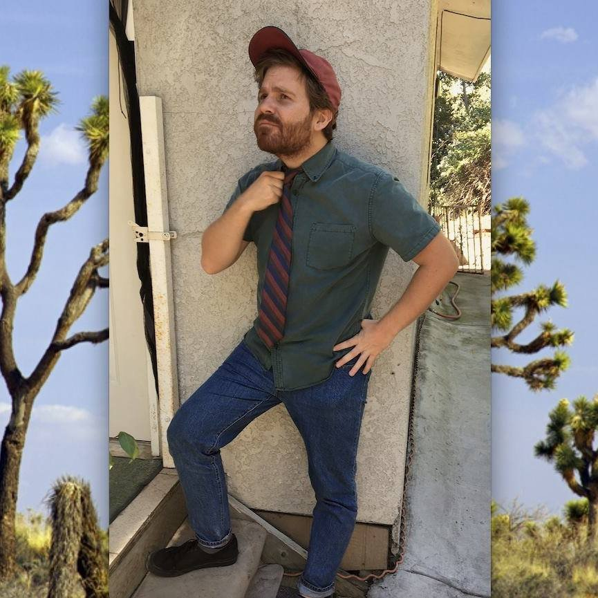

Hi, I’m Chris.
I grew up in a small town called Ozark, Missouri, spending most of my days hooked up to a breathing machine and watching films. My asthma was quite severe when I was younger. Film offered me a chance to escape my troubles and see what the world was like. There was something about watching movies that gave me great comfort. It's a part of myself that followed me into adulthood and that I'd like nothing to do more than share with others.
From my first film experience at the local single-screen theater to my most beloved job as a 35mm projectionist, I knew that my life would be dedicated to filmmaking and telling stories. I learned how to tell those stories through my studies at Academy of Art University where I earned my Bachelor of Fine Arts Degree in Motion Pictures and Television with an emphasis in editing.
I've been watching and editing films for almost 20 years. When I finish one goal, I'm onto the next. I'm ready to help make your vision into a story that will inspire and drive others, just as those initial stories inspired me.
I am proficient with:
DaVinci Resolve
AVID Media Composer